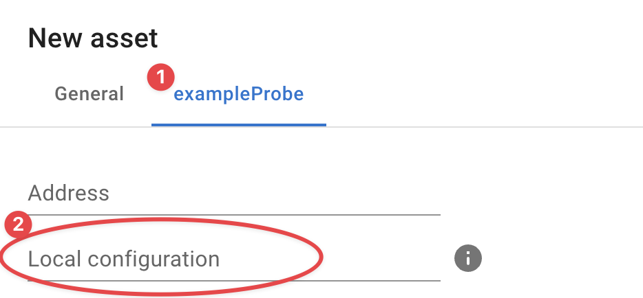

Credentials
Some InfraSonar probes require configuration and/or credentials to execute / authenticate its queries. A good example is the WMI-probe that requires Windows domain credentials to perform WMI queries.
Appliance manager
We urge you to use our appliance manager when starting out instead of manually configuring credentials as outlined section below
Location
Credentials are stored in the data/config subdirectory. This directory is relative from the directory from which you deployed InfraSonar. As we suggest using /etc/infrasonar the credentials file would be located here: /etc/infrasonar/data/config
Format
The credentials file is named: infrasonar.yaml
As suggested by the .yaml file extension the file format used is the yaml format.
It is worth noting that Indentation is meaningful in YAML. As such make sure that you use spaces, rather than tab characters, to indent sections. In the default configuration files 2 spaces per indentation level are used, We recommend you do the same.
See also our nano documentation section on how to edit files on the appliance.
Basic
This is the most basic credentials infrasonar.yaml configuration file.
| infrasonar.yaml | |
|---|---|
1 2 3 4 | |
- The first line identifies the probe section, in this example
exampleProbe - The second line starts the configuration section using the keyword
config - The third and fourth line in this example set the configuration parameters
usernameandpassword - Note the
" "quotes used for the password, this ensures any special characters are parsed correctly.
When the file is saved InfraSonar removes the password value and adds a encrypted section containing the encrypted password as shown in the example below:
| infrasonar.yaml | |
|---|---|
1 2 3 4 5 6 7 | |
How to add a new password
Adding a new password is easy, remove the encrypted value (lines 4-6) and add the new password as a string.
Security considerations
InfraSonar will make password and secret values unreadable but this must not be regarded as true encryption as the encryption key is publicly available.
assets section
The infrasonar.yaml allows for specific credentials per asset to achieve this you can add the asset ID's to the configuration.
| infrasonar.yaml | |
|---|---|
1 2 3 4 5 6 7 8 9 10 11 12 13 14 15 | |
Asset specific configuration can be added by adding a assets section and assigning assets to this section by providing the asset-id using the id property, this can either be one asset (line 6) or a list of assets (line 10-12).
use property
use is a special property to indicate a probe should inhered the config from another probe.
otherProbe:
use: exampleProbe
The use property can be partially useful for SNMP based probes as it is allows to point these to the snmp configuration section
some-snmp-based-probe:
use: snmp
Specific configuration
Most probes have a default section they use to lookup local configuration. For the SNMP probe this is snmp while the Microsoft WMI probes uses wmi
It is however possible to create your own section, in the example below you see how we created myCustomSection.
myCustomSection:
config:
password: "esther's secret"
username: esther
Using a custom section can be useful when credentials are used by multiple probes, for example:
myCustomSection:
config:
password: "esther's secret"
username: esther
wmi:
use: myCustomSection
vcenter:
use: myCustomSection
In this scenario the wmi probe and vcenter probe both use the credentials provided by the myCustomSection section.
Local configuration
You can also specific which section a probe should use using the InfraSonar user interface.
Each probe () which supports this has a Local configuration input box () where you can enter the name of the section you want this asset / probe to use.

How to add a new password
Adding a new password is easy, remove the encrypted value (lines 4-6) and add the new password as a string.
Probe specifics
For most probes it is sufficient to provide a username and password; we outlined probes with a more distinct configuration here:
SNMP
The SNNP probe supports: SNMPv1, SNMPv2c, and SNMPv3 each of these are outlined in the upcoming paragraphs.
When no credentials are provided we use the following defaults:
- SNMP version: 2c
- Community string:
public
SNMPv1
snmp:
config:
community: SomeCommunityString
version: 1
Note how we specify the version using the version property.
SNMPv2c
snmp:
config:
community: SomeCommunityString
version: "2c"
Note how we specify the version using the version property using quotes
SNMPv3
| infrasonar.yaml | |
|---|---|
1 2 3 4 5 6 7 8 9 10 | |
- auth (5)
-
Supported values for type:
USM_AUTH_HMAC96_MD5USM_AUTH_HMAC96_SHAUSM_AUTH_NONE
When omitted
USM_AUTH_NONEis used. - priv (8)
-
Supported values for type:
- USM_PRIV_CBC56_DES
- USM_PRIV_CFB128_AES
- USM_PRIV_NONE
When omitted
USM_PRIV_NONEis used.
Encrypted community string
It is possible to encrypt the community string on the appliance by indicating the string is secret as such:
snmp:
config:
community:
secret: SomeCommunityString
version: "2c"
This results upon save in community string being encrypted:
snmp:
community:
secret:
encrypted: !!binary |
Z0FBQUFBQmptMEhGq0FhTGJZNFNTckZKdXzWaVpKT2RzMzBARlJGUW1MVGVCVHNmTE15eVlOMTVD
dGZWU1VEYUtPN2V4cWdOeGdoYlB1M29ua2JTZzNuQVlqU09eM0Z2c2c9PQ==
version "2c"
WMI
The WMI probe uses a straightforward configuration as shown below.
When Microsoft Active directory accounts are used the username can be either in domain format: domain\infrasonar_service_account or use the UPN format: infrasonar_service_account@domain.something
An asset specific configuration can be useful for non-domain joined servers.
wmi:
config:
username: "charlie@domain.org"
password: "a secret"
assets:
- config:
username: "bob"
password: "my secret"
id: 123
FAQ
Is it possible to copy credentials?
Yes credential files can be exchanged between appliances belonging to the same InfraSonar container.
I note my credentials are not being encoded?
Check if you per accident configured a duplicate section, see this simplified example where we configured two wmi sections:
wmi:
config:
username: alice
password: "a secret"
wmi:
use: something